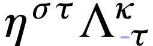
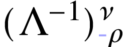

GO BACK
| Note on Weinberg's textbooks
on QFT |
|
Notation. The Latin indices such as
 ,
,  ,
,  , etc.,
typically span the three spatial coordinate labels, commonly denoted as
1, 2, 3. On the other hand, Greek indices like
, etc.,
typically span the three spatial coordinate labels, commonly denoted as
1, 2, 3. On the other hand, Greek indices like  , , and
so forth, usually range over the four spacetime coordinate labels,
specifically 1, 2, 3, 0, where represents the
time coordinate. Indices that appear twice are usually summed unless
specified otherwise. The spacetime metric, denoted by
, , and
so forth, usually range over the four spacetime coordinate labels,
specifically 1, 2, 3, 0, where represents the
time coordinate. Indices that appear twice are usually summed unless
specified otherwise. The spacetime metric, denoted by  , is a diagonal matrix with elements
, is a diagonal matrix with elements  and . The
d'Alembertian is represented as and defined by
the equation
and . The
d'Alembertian is represented as and defined by
the equation  , where is the Laplacian given by . The ‘ Levi-Civita tensor,’ symbolized
by , is an entirely
antisymmetric entity with
, where is the Laplacian given by . The ‘ Levi-Civita tensor,’ symbolized
by , is an entirely
antisymmetric entity with  .
Spatial vectors in three dimensions are marked by boldface characters. A
unit vector corresponding to any vector is shown with a hat, as in
.
Spatial vectors in three dimensions are marked by boldface characters. A
unit vector corresponding to any vector is shown with a hat, as in  . A dot over a variable signifies
its time derivative. The Dirac matrices
. A dot over a variable signifies
its time derivative. The Dirac matrices  adhere
to , and , while .
The step function yields a value of +1 when and 0 when
adhere
to , and , while .
The step function yields a value of +1 when and 0 when  .
For a matrix or vector
.
For a matrix or vector  , the
complex conjugate, transpose, and Hermitian adjoint are represented by
, the
complex conjugate, transpose, and Hermitian adjoint are represented by
 ,
,  , and
, and  respectively. The
Hermitian adjoint of an operator
respectively. The
Hermitian adjoint of an operator  is marked as
is marked as
 , except when an asterisk
emphasizes that a vector or matrix of operators is not transposed. Terms
like +H.c. or +c.c. appended to equations indicate the addition of the
Hermitian adjoint or complex conjugate of preceding terms. A Dirac
spinor
, except when an asterisk
emphasizes that a vector or matrix of operators is not transposed. Terms
like +H.c. or +c.c. appended to equations indicate the addition of the
Hermitian adjoint or complex conjugate of preceding terms. A Dirac
spinor  with a bar over it is defined as
with a bar over it is defined as  . Apart from in Chapter ?,
units are normalized such that
. Apart from in Chapter ?,
units are normalized such that  and the speed of
light are set to one. The fine structure constant is represented as
, calculated as
and the speed of
light are set to one. The fine structure constant is represented as
, calculated as  , approximately
, approximately  ,
where is the rationalized charge of the
electron. Parenthetical numbers next to quoted numerical figures signify
the uncertainty in the last digits. Unless otherwise stated,
experimental data is sourced from ‘Review of Particle
Properties,’ Phys. Rev. D50, 1173 (1994).
,
where is the rationalized charge of the
electron. Parenthetical numbers next to quoted numerical figures signify
the uncertainty in the last digits. Unless otherwise stated,
experimental data is sourced from ‘Review of Particle
Properties,’ Phys. Rev. D50, 1173 (1994).
Chapter 1
Relativistic Quantum
Mechanics
The perspective presented argues that quantum field theory exists in its
current form due to its unique capability to harmonize quantum mechanics
with special relativity, under some conditions. Our initial endeavor is
to explore how symmetries, such as Lorentz invariance, manifest within a
quantum context in the following aspects.
1.1Quantum Mechanics
Quantum field theory rests on the same foundational quantum mechanics
developed by Schrödinger, Heisenberg, Pauli, Born, and other
pioneers in 1925–1926.
-
Physical states are represented by rays in complex Hilbert space
(the inner product is denoted be  with the
first slot antilinear (conjugate-linear) and the second slot
linear). Here, a ray is a set of normalized vectors (i.e.
with the
first slot antilinear (conjugate-linear) and the second slot
linear). Here, a ray is a set of normalized vectors (i.e.
 ) with
) with  and
and  belonging to the same ray if
belonging to the same ray if  , where
, where  is an arbitrary complex number with .
is an arbitrary complex number with .
-
Observables are represented by Hermitian operators. A state
represented by a ray  has a definite value
for the observable represented by an
operator if vectors
belonging to this ray are eigenvectors of
with eigenvalue :
has a definite value
for the observable represented by an
operator if vectors
belonging to this ray are eigenvectors of
with eigenvalue :

-
If a system is in a state represented by a ray , and an experiment is done to test whether
it is in any one of the different states represented by mutually
orthogonal rays  (for instance, by measuring
one or more observables) then the probability of finding it in the
state represented by
(for instance, by measuring
one or more observables) then the probability of finding it in the
state represented by  is
is
where and  are any
vectors belongs to rays and , respectively.
are any
vectors belongs to rays and , respectively.
1.2Symmetries
A symmetry transformation can be thought of as a shift in perspective
that does not affect the outcomes of potential experiments. If an
observer perceives a system in a state denoted
by a ray or  or ..., a corresponding observer
scrutinizing the same system would view it in a different state,
symbolized by a ray
or ..., a corresponding observer
scrutinizing the same system would view it in a different state,
symbolized by a ray  or
or
or
or  ..., respectively. However, both
observers must ascertain the same probabilities:
..., respectively. However, both
observers must ascertain the same probabilities:
 |
(1.2.1) |
This condition is necessary but not sufficient for a ray
transformation to qualify as a symmetry; additional conditions will be
elaborated upon in the following chapter. Wigner proved a significant
theorem in the early 1930s, stating that for any such transformation
, an operator  can be defined in the Hilbert space. If
is a vector in ray , then
can be defined in the Hilbert space. If
is a vector in ray , then
 belongs to ray .
The operator can either be unitary and linear:
belongs to ray .
The operator can either be unitary and linear:
|
|
|
(1.2.2) |
|
|
 |
(1.2.3) |
or antiunitary and antilinear:
|
|
 |
(1.2.4) |
|
|
 |
(1.2.5) |
for all  in the Hilbert space.
in the Hilbert space.
This finding is called the fundamental theorem of Wigner and the proof
is the following:
The fundamental theorem of Wigner (1931).
Let be a Hilbert space and let

be a bijection satisying

for all rays and ;
and vectors  , ,
, ,  ,
and
,
and  . Then there exists an
operator acting on
such that
. Then there exists an
operator acting on
such that
for all ray and all  ; and that either is
unitary and linear or antiunitary and antilinear.
; and that either is
unitary and linear or antiunitary and antilinear.
Proof.
As previously stated, the adjoint of a linear operator  is determined by
is determined by
This definition does not apply to an antilinear operator since the
right-hand side of (1.2.6) would be linear in  , while the left-hand side is antilinear in
. For an antilinear operator
, the adjoint is instead
specified as:
, while the left-hand side is antilinear in
. For an antilinear operator
, the adjoint is instead
specified as:
 |
(1.2.7) |
Given this definition, the criteria for either unitarity or
antiunitarity can both be expressed as:
 |
(1.2.8) |
There exists a trivial symmetry transformation ℛ→ℛ,
represented by the identity operator  .
This operator is naturally unitary and linear. Continuity dictates that
any symmetry operation (like a rotation, translation, or Lorentz
transformation) that can be reduced to a trivial transformation by
continuously adjusting certain parameters (such as angles, distances, or
velocities) must be characterized by a linear unitary operator , as opposed to one that is
antilinear and antiunitary. (Symmetries represented by antiunitary
antilinear operators are less common in physics; they all entail a
reversal in the direction of time flow. See Section ? for
more details.)
.
This operator is naturally unitary and linear. Continuity dictates that
any symmetry operation (like a rotation, translation, or Lorentz
transformation) that can be reduced to a trivial transformation by
continuously adjusting certain parameters (such as angles, distances, or
velocities) must be characterized by a linear unitary operator , as opposed to one that is
antilinear and antiunitary. (Symmetries represented by antiunitary
antilinear operators are less common in physics; they all entail a
reversal in the direction of time flow. See Section ? for
more details.)
Specifically, a symmetry transformation that is nearly trivial on an
infinitesimal scale can be depicted by a linear unitary operator that is
infinitesimally close to the identity operator:
 |
(1.2.9) |
Here,  is a real infinitesimal. For to be both unitary and linear,
needs to be Hermitian and linear, making it a potential observable. In
fact, many (if not all) physical observables, like angular momentum or
momentum, are derived from symmetry transformations in this manner.
is a real infinitesimal. For to be both unitary and linear,
needs to be Hermitian and linear, making it a potential observable. In
fact, many (if not all) physical observables, like angular momentum or
momentum, are derived from symmetry transformations in this manner.
The set of symmetry transformations possesses specific characteristics
that categorize it as a group. If is a
transformation converting rays to  , and
, and  is another
transformation that maps to , then the outcome of executing both
transformations consecutively is yet another symmetry transformation,
denoted as
is another
transformation that maps to , then the outcome of executing both
transformations consecutively is yet another symmetry transformation,
denoted as  , that transforms
into .
Additionally, any symmetry transformation that
changes into has an
inverse, expressed as , which
reverts back to .
Moreover, there exists an identity transformation,
, that transforms
into .
Additionally, any symmetry transformation that
changes into has an
inverse, expressed as , which
reverts back to .
Moreover, there exists an identity transformation,  , which leaves rays unaltered.
, which leaves rays unaltered.
The unitary or antiunitary operators that
correspond to these symmetry transformations emulate this group
structure, albeit with added complexity because
operators act on vectors in Hilbert space instead of on rays. If transforms into , then applying  to a
vector in must result in
a vector
to a
vector in must result in
a vector  in .
If then maps this ray to ,
in .
If then maps this ray to ,  must also belong to , as must
must also belong to , as must  . Therefore, the vectors can only differ by a phase
factor
. Therefore, the vectors can only differ by a phase
factor  , as given by:
, as given by:
 |
(1.2.10) |
Moreover, barring a notable exception, the linearity (or antilinearity)
of specifies that these phases are
state-independent. To prove this, let us consider two non-proportional
vectors  and
and  and apply
Equation (1.2.10) to the state:
and apply
Equation (1.2.10) to the state:
Every unitary or antiunitary operator has an inverse (its adjoint),
which is also either unitary or antiunitary. Upon left-multiplying
Equation (1.2.11) by  ,
we arrive at:
,
we arrive at:
 |
(1.2.12) |
As and are linearly
independent, it follows that
 |
(1.2.13) |
Consequently, the phase in Equation (1.2.10) is
state-independent, leading to the operator relation:
When  , this indicates that
constitutes a representation of the group of
symmetry transformations. For arbitrary phases , we refer to it as a ‘projective
representation’ or a representation ‘up to a phase’.
Whether the Lie group structure allows for state vectors to furnish an
ordinary or projective representation can not be inferred from the group
structure alone but will become apparent later.
, this indicates that
constitutes a representation of the group of
symmetry transformations. For arbitrary phases , we refer to it as a ‘projective
representation’ or a representation ‘up to a phase’.
Whether the Lie group structure allows for state vectors to furnish an
ordinary or projective representation can not be inferred from the group
structure alone but will become apparent later.
The exception to the reasoning that concluded in Equation (1.2.14)
lies in the possibility that the system may not be preparable in a state
represented by . For example,
it is generally considered unfeasible to prepare a system in a
superposition of states with total angular momenta that are integers and
half-integers. In such scenarios, we refer to the presence of a
‘superselection rule’ between different categories of
states. As a result, the phases could be
contingent on which class of states the operators  and are acting upon. Further details about these
phases and projective representations will be discussed in Section ?. It will be shown that any symmetry group featuring
projective representations can be extended (without altering its
physical meaning) to allow for all its representations to be
non-projective, i.e., with .
Until we reach Section ?, we will proceed with the
assumption that such an extension has been applied, and will take in (1.2.14). Also, the existence of
spinor is partially derived from the phase ambiguity that arises when
taking absolute values and the fact that the homotopy class of the
homogeneous Lorentz group.
and are acting upon. Further details about these
phases and projective representations will be discussed in Section ?. It will be shown that any symmetry group featuring
projective representations can be extended (without altering its
physical meaning) to allow for all its representations to be
non-projective, i.e., with .
Until we reach Section ?, we will proceed with the
assumption that such an extension has been applied, and will take in (1.2.14). Also, the existence of
spinor is partially derived from the phase ambiguity that arises when
taking absolute values and the fact that the homotopy class of the
homogeneous Lorentz group.
In physics, a specific type of group known as a connected Lie group
holds special significance. These are groups comprised of
transformations  , defined by
a finite collection of real, continuous parameters, symbolized as . Each group element is linked to
the identity element through a continuous path within the group itself.
The multiplication rule for the group is expressed as
, defined by
a finite collection of real, continuous parameters, symbolized as . Each group element is linked to
the identity element through a continuous path within the group itself.
The multiplication rule for the group is expressed as
 |
(1.2.15) |
where is a function of both  and . If
and . If  denotes the coordinates of the identity, then
denotes the coordinates of the identity, then
 |
(1.2.16) |
must hold true. In the case of such continuous groups, the
transformations must be represented in the physical Hilbert space by
unitary operators  , rather
than antiunitary ones. These unitary operators, at least in a finite
vicinity of the identity, can be expressed by a power series as
, rather
than antiunitary ones. These unitary operators, at least in a finite
vicinity of the identity, can be expressed by a power series as
Here, , and so on, are
Hermitian operators independent of .
Assuming that provides a standard
(non-projective) representation of the transformation group, meaning
 |
(1.2.18) |
we can expand this in terms of and  . In accordance with Equation (1.2.16),
the second-order expansion of should be
. In accordance with Equation (1.2.16),
the second-order expansion of should be
 |
(1.2.19) |
Here, are real coefficients. Note that the
presence of any  or terms
would be in conflict with Equation (1.2.16). Following
this, Equation (1.2.18) can be articulated as:
or terms
would be in conflict with Equation (1.2.16). Following
this, Equation (1.2.18) can be articulated as:
|
|
|
|
|
|
|
|
|
|
 |
(1.2.20) |
On both sides of Equation (1.2.20), terms of order 1, , ,
, and
correspond without issue. However, when focusing on the
terms, a non-trivial condition emerges:
This reveals that if we know the group structure, specifically the
function  and its corresponding quadratic
coefficient , we can
determine the second-order terms of using the
first-order generators .
However, there's a requirement for consistency: the operator has to be symmetric in
and its corresponding quadratic
coefficient , we can
determine the second-order terms of using the
first-order generators .
However, there's a requirement for consistency: the operator has to be symmetric in  and , as it's the second derivative of
with respect to and
and , as it's the second derivative of
with respect to and
 . Therefore, Equation (1.2.21) necessitates that
. Therefore, Equation (1.2.21) necessitates that
where  are a set of real constants termed as
structure constants, defined by
are a set of real constants termed as
structure constants, defined by
This kind of commutation relationship is termed a Lie algebra. In a
later section, we will essentially demonstrate that this commutation
relation (1.2.22) is the sole condition needed to
perpetuate this computation. In other words, the complete power series
for can be generated from an endless chain of
equations like Equation (1.2.21), as long as we are aware
of the first-order terms, namely the generators . While this does not mean
operators are uniquely identified for all based
solely on , it does signify
that they are uniquely specified within a finite vicinity of the
identity coordinate , such
that Equation (1.2.15) holds true if
and lie within this region. The discussion about
extending this to all will take place in a
subsequent section.
There is a particular scenario of considerable relevance that will recur
frequently in our discussions. Assume the function
is simply additive for some or all of the coordinates , as expressed by:
 |
(1.2.24) |
This situation is applicable, for example, in the context of spacetime
translations or for rotations about a single fixed axis (but not for
both simultaneously). In this special case, the coefficients from Equation (1.2.19) become zero, and
likewise, the structure constants in Equation (1.2.23) also
vanish. Consequently, the generators are commutative, denoted by:
Such a group is termed as Abelian. Under these conditions, computing
for all becomes
straightforward. According to Equations (1.2.18) and (1.2.24), for any integer  ,
we can express:
,
we can express:

By taking the limit as approaches infinity and
retaining only the first-order term in  ,
we obtain:
,
we obtain:
and consequently,
 |
(1.2.26) |
1.3Quantum Lorentz
Transformations
Einstein's principle of relativity asserts the equivalence of specific
'inertial' frames of reference, setting it apart from the Galilean
principle of relativity adhered to by Newtonian mechanics. The
distinction comes from the transformation equations that link coordinate
systems across different inertial frames. Given that  represents the coordinates in one inertial frame—where
represents the coordinates in one inertial frame—where  are Cartesian spatial coordinates and
are Cartesian spatial coordinates and  is a time coordinate (assuming the speed of light equals one)—the
coordinates
is a time coordinate (assuming the speed of light equals one)—the
coordinates  in another inertial frame must
satisfy:
in another inertial frame must
satisfy:
 |
(1.3.1) |
or, alternatively,
In these equations, is a diagonal matrix with
elements defined as:
The summation convention applies: any index like
and in Equation (1.3.2) appearing
twice, once as a superscript and once as a subscript, is summed over.
These transformations have the unique feature that the speed of light
remains consistent—in our chosen units, equal to one—across
all inertial frames. A light wave with unit speed satisfies , or in terms of the equation , which also implies
and thus  .
.
Any coordinate transformation  fulfilling Eq. (1.3.2) is linear, as denoted by:
fulfilling Eq. (1.3.2) is linear, as denoted by:
 |
(1.3.4) |
Here,  are arbitrary constants, and
are arbitrary constants, and  is a constant matrix that meets the criteria:
is a constant matrix that meets the criteria:
 |
(1.3.5) |
For certain applications, it's advantageous to express the Lorentz
transformation condition using an alternate formulation. The matrix possesses an inverse, designated as  , which coincidentally has the same diagonal
components:
, which coincidentally has the same diagonal
components:  and
and  .
.
By judiciously inserting parentheses and multiplying Eq. (1.3.5)
by , we get:

Further multiplying by the inverse of the matrix
yields:
These transformations constitute a group. When we initially apply a
Lorentz transformation as per Eq. (1.3.4), and then follow
it with another Lorentz transformation  ,
such that
,
such that

we find that the overall transformation effect is identical to
performing a Lorentz transformation as described
by
 |
(1.3.7) |
Here, it's worth noting that if and  both meet the conditions of Eq. (1.3.5),
both meet the conditions of Eq. (1.3.5),  will also be a Lorentz transformation. The bar
notation is simply used to distinguish one Lorentz transformation from
another. Correspondingly, the transformations
will also be a Lorentz transformation. The bar
notation is simply used to distinguish one Lorentz transformation from
another. Correspondingly, the transformations  on
physical states obey the composition law
on
physical states obey the composition law
 |
(1.3.8) |
Calculating the determinant of Eq. (1.3.5), we arrive at
 |
(1.3.9) |
This implies that has an inverse, denoted as
, which as per Eq. (1.3.5)
takes the form
According to Eq. (1.3.8), the inverse of the transformation
turns out to be ,
and naturally, the identity transformation is represented by .
Based on the dialogue in the prior section, the transformations give rise to a unitary linear transformation acting
on vectors in the physical Hilbert space, represented as  . These operators obey
a composition law articulated as
. These operators obey
a composition law articulated as
 |
(1.3.11) |
It's worth noting that to prevent the emergence of a phase factor on the
right-hand side of Eq. (1.3.11), it's generally required to
extend the Lorentz group. The suitable extension for accomplishing this
is discussed in Section ?.
The complete set of transformations is formally
referred to as the inhomogeneous Lorentz group, also known as the
Poincaré group. This group has several significant subgroups.
First, transformations with  naturally constitute
a subgroup, described by
naturally constitute
a subgroup, described by
 |
(1.3.12) |
which is termed the homogeneous Lorentz group. Additionally, from Eq.
(1.3.9), it's evident that can be
either  or
or  ;
transformations having inherently make up a
subgroup of either the homogeneous or inhomogeneous Lorentz groups.
Further scrutiny of the 00-components of Eqs. (1.3.5) and
(1.3.6) yields
;
transformations having inherently make up a
subgroup of either the homogeneous or inhomogeneous Lorentz groups.
Further scrutiny of the 00-components of Eqs. (1.3.5) and
(1.3.6) yields
 |
(1.3.13) |
where ranges over 1, 2, and 3. This shows that
either or  .
Transformations where constitute a subgroup.
Observe that if
.
Transformations where constitute a subgroup.
Observe that if  and
and  are
two such matrices
are
two such matrices  , then
, then
According to Eq. (1.3.13), the three-vector  has a length of
has a length of  ,
and similarly, the three-vector
,
and similarly, the three-vector  has a length of
. Therefore, the scalar
product of these two three-vectors has an upper limit given by
has a length of
. Therefore, the scalar
product of these two three-vectors has an upper limit given by
 |
(1.3.14) |
leading to
This subgroup, characterized by and , is identified as the proper orthochronous
Lorentz group. As one cannot smoothly transition from
to  , or from
to , any Lorentz
transformation derived from the identity through a continuous variation
of parameters must share the same sign for and
as the identity, and thus must be a member of
the proper orthochronous Lorentz group.
, or from
to , any Lorentz
transformation derived from the identity through a continuous variation
of parameters must share the same sign for and
as the identity, and thus must be a member of
the proper orthochronous Lorentz group.
Every Lorentz transformation falls into one of two categories: it is
either proper and orthochronous, or it can be expressed as the
composition of an element from the proper orthochronous Lorentz group
and one of the discrete transformations or  or
or  . Here,
represents the space inversion, which has
non-zero elements given by
. Here,
represents the space inversion, which has
non-zero elements given by
while stands for the time-reversal matrix, with
non-zero elements defined as
 |
(1.3.16) |
Therefore, a comprehensive understanding of the entire Lorentz group can
be achieved by studying its proper orthochronous subgroup, along with
the concepts of space inversion and time-reversal. The exploration of
space inversion and time-reversal will be carried out separately in
Section ?. Until that point, our focus will remain on
either the homogeneous or inhomogeneous proper orthochronous Lorentz
group.
1.4The Poincaré
Algebra
As discussed in Section 1.2, many essential attributes of
any Lie symmetry group are encapsulated in the properties of the
elements in the vicinity of the identity element. In the context of the
inhomogeneous Lorentz group, the identity transformation is given by
 and .
Therefore, we aim to explore transformations that can be written as
and .
Therefore, we aim to explore transformations that can be written as
where both  and are
infinitesimal. The Lorentz condition, expressed as equation (1.3.5),
can be rewritten as
and are
infinitesimal. The Lorentz condition, expressed as equation (1.3.5),
can be rewritten as

In this book, we adopt the convention that indices can be raised or
lowered by contracting with or :

If we retain only the first-order terms in in
the Lorentz condition (1.3.5), we find that this condition
simplifies to the antisymmetry of  :
:
 |
(1.4.2) |
An antisymmetric second-rank tensor in four dimensions has independent components. Coupled with the four components
of , an inhomogeneous Lorentz
transformation is thus characterized by  parameters.
parameters.
Because  maps any ray onto itself, it must be
proportional to the unit operator, and by a choice of phase may be made
equal to it. Excluding the presence of superselection rules, we can
eliminate the chance that this proportionality factor varies depending
on the state acted upon by .
This exclusion follows the same logic we applied in Section 1.2
to dismiss the idea that phases in projective representations of
symmetry groups might depend on the states they act upon. In cases where
superselection rules are relevant, it could be necessary to adjust the
phase factors of depending on the sector it acts
on.
maps any ray onto itself, it must be
proportional to the unit operator, and by a choice of phase may be made
equal to it. Excluding the presence of superselection rules, we can
eliminate the chance that this proportionality factor varies depending
on the state acted upon by .
This exclusion follows the same logic we applied in Section 1.2
to dismiss the idea that phases in projective representations of
symmetry groups might depend on the states they act upon. In cases where
superselection rules are relevant, it could be necessary to adjust the
phase factors of depending on the sector it acts
on.
For an infinitesimal Lorentz transformation as described by equation (1.4.1),  must be equal to the unit
operator augmented by terms that are linear in
must be equal to the unit
operator augmented by terms that are linear in
 and .
We express this relationship as
and .
We express this relationship as
 |
(1.4.3) |
In this equation,  and
are operators that are independent of
and
are operators that are independent of  and , and the ellipsis signifies terms
of higher order in and/or . For to be unitary,
operators and must be
Hermitian:
and , and the ellipsis signifies terms
of higher order in and/or . For to be unitary,
operators and must be
Hermitian:
 |
(1.4.4) |
(Yes, the generators of boosts are observables.) Given that is antisymmetric, its coefficient
can also be taken to be antisymmetric:
 |
(1.4.5) |
As we will elaborate on later, ,
and  are the components of the momentum
operators; , and are the angular momentum vector components; and
are the components of the momentum
operators; , and are the angular momentum vector components; and  is the energy operator or Hamiltonian. These
identifications of angular-momentum generators are necessitated by the
commutation relations of .
However, the commutation relations don't prescribe a definite sign for
is the energy operator or Hamiltonian. These
identifications of angular-momentum generators are necessitated by the
commutation relations of .
However, the commutation relations don't prescribe a definite sign for
 and ,
making the sign choice for the term in equation
(1.4.3) a matter of convention. The alignment of this
choice with the standard definition of the Hamiltonian
will be clarified in Section ?.
and ,
making the sign choice for the term in equation
(1.4.3) a matter of convention. The alignment of this
choice with the standard definition of the Hamiltonian
will be clarified in Section ?.
We turn our attention to the Lorentz transformation characteristics of
and .
We focus on the composite expression

where and are parameters
of a new transformation, distinct from and . According to Equation (1.3.11),
the operation  results in , signifying that
results in , signifying that  serves as
the inverse of .
Consequently, from (1.3.11), we obtain:
serves as
the inverse of .
Consequently, from (1.3.11), we obtain:
 |
(1.4.6) |
To the first order in and , this leads to:
|
|
 |
|
|
|
|
(1.4.7) |
By matching the coefficients of and on both sides of the equation and employing (1.3.10),
we arrive at:
|
|
|
(1.4.8) |
|
|
 |
(1.4.9) |
In the case of homogeneous Lorentz transformations where , these transformation laws simply indicate
that behaves as a tensor and
as a vector. For pure translations, where  ,
these rules convey that remains invariant under
translation, while does not. Specifically, the
alteration in the spatial components of due to a
spatial translation corresponds to the conventional change in angular
momentum when the point of reference for measuring angular momentum is
shifted.
,
these rules convey that remains invariant under
translation, while does not. Specifically, the
alteration in the spatial components of due to a
spatial translation corresponds to the conventional change in angular
momentum when the point of reference for measuring angular momentum is
shifted.
Next, we consider the application of rules (1.4.8) and (1.4.9) to an infinitesimal transformation. Specifically, we
take  and
and  ,
where the infinitesimals
,
where the infinitesimals  and
are not related to the earlier and . Utilizing Equation (1.4.3) and
retaining only first-order terms in and , Equations (1.4.8)
and (1.4.9) simplify to:
and
are not related to the earlier and . Utilizing Equation (1.4.3) and
retaining only first-order terms in and , Equations (1.4.8)
and (1.4.9) simplify to:
|
|
|
(1.4.10) |
|
|
 |
(1.4.11) |
By isolating the coefficients of and  on both sides of these equations, we derive the
commutation relations:
on both sides of these equations, we derive the
commutation relations:
|
|
 |
(1.4.12) |
|
|
 |
(1.4.13) |
|
|
 |
(1.4.14) |
These equations define the Lie algebra of the Poincaré group.
In quantum mechanics, particular importance is given to those operators
that are conserved, meaning they commute with the energy operator . A review of Equations (1.4.13)
and (1.4.14) reveals that these conserved operators include
the momentum three-vector
 |
(1.4.15) |
and the angular-momentum three-vector
 |
(1.4.16) |
as well as the energy itself. The other
generators constitute what is termed the 'boost' three-vector
 |
(1.4.17) |
These are not conserved, which is why their eigenvalues are not employed
to characterize physical states. Expressed in a three-dimensional
notation, the commutation relations (1.4.12), (1.4.13),
and (1.4.14) can be represented as:
|
|
|
(1.4.18) |
|
|
 |
(1.4.19) |
|
|
|
(1.4.20) |
|
|
|
(1.4.21) |
|
|
 |
(1.4.22) |
|
|
|
(1.4.23) |
|
|
 |
(1.4.24) |
Here, take the values 1, 2, and 3, and is the completely antisymmetric quantity where . The commutation relation (1.4.18) is identified as belonging to the angular-momentum
operator.
Let us prove (1.4.22) and (1.4.24). From , (1.4.13), (1.4.15),
and (1.4.17), we have

The subgroup of pure translations  is a part of
the inhomogeneous Lorentz group, and its group multiplication rule, as
defined by (1.3.7), is
is a part of
the inhomogeneous Lorentz group, and its group multiplication rule, as
defined by (1.3.7), is
 |
(1.4.25) |
This multiplication rule is additive, similar to what is described in
Equation (1.2.24). Employing Equation (1.4.3)
and revisiting the arguments that led to Equation (1.2.26),
we determine that finite translations in the physical Hilbert space are
represented as
 |
(1.4.26) |
Likewise, a rotation  through an angle around the direction specified by
is represented in the physical Hilbert space as
through an angle around the direction specified by
is represented in the physical Hilbert space as
 |
(1.4.27) |
Contrasting the Poincaré algebra with the Lie algebra of the
Galilean group, the symmetry group for Newtonian mechanics, offers
fascinating insights. While it is possible to derive the Galilean
algebra beginning with its transformation rules and using the same
methodology we used for the Poincaré algebra, a simpler path
exists. Since we already possess Eqs. (1.4.18)-(1.4.24),
we can more conveniently obtain the Galilean algebra as the
Inönü-Wigner contraction of the Poincaré algebra in the
low-velocity limit. For a set of particles with an average mass and velocity  ,
we anticipate the momentum and angular-momentum operators to be of the
order
,
we anticipate the momentum and angular-momentum operators to be of the
order  ,
,  . On the flip side, the energy operator is composed of a total mass
. On the flip side, the energy operator is composed of a total mass  and a non-mass energy
and a non-mass energy  (kinetic and potential),
which are of the order
(kinetic and potential),
which are of the order  ,
. Examining Eqs. (1.4.18)-(1.4.24) reveals that in the limit where
,
. Examining Eqs. (1.4.18)-(1.4.24) reveals that in the limit where  , the commutation relations simplify to:
, the commutation relations simplify to:
where  scales as
scales as  .
It's noteworthy that in Hilbert space, the sequence of operations
involving a translation
.
It's noteworthy that in Hilbert space, the sequence of operations
involving a translation  and a 'boost'
and a 'boost'  does not yield the expected transformation
does not yield the expected transformation  . Instead, we have:
. Instead, we have:

The emergence of the phase factor  indicates that
we are dealing with a projective representation, which comes with a
superselection rule that precludes the mixing of states with different
masses. In this aspect, the mathematical framework of the
Poincaré group is less complex than that of the Galilean group.
Nonetheless, it is entirely feasible to extend the Galilean group
formally by introducing an additional generator to its Lie algebra. This
new generator would commute with all existing generators and have
eigenvalues corresponding to the masses of the different states. In such
a scenario, physical states would be represented through an ordinary,
rather than projective, representation of the augmented symmetry group.
While this might seem like a minor change in notation, it effectively
eliminates the necessity for a mass superselection rule within the
reinterpreted Galilean group.
indicates that
we are dealing with a projective representation, which comes with a
superselection rule that precludes the mixing of states with different
masses. In this aspect, the mathematical framework of the
Poincaré group is less complex than that of the Galilean group.
Nonetheless, it is entirely feasible to extend the Galilean group
formally by introducing an additional generator to its Lie algebra. This
new generator would commute with all existing generators and have
eigenvalues corresponding to the masses of the different states. In such
a scenario, physical states would be represented through an ordinary,
rather than projective, representation of the augmented symmetry group.
While this might seem like a minor change in notation, it effectively
eliminates the necessity for a mass superselection rule within the
reinterpreted Galilean group.
1.5One-Particle States
We turn our attention to the categorization of single-particle states
based on their transformation properties under the inhomogeneous Lorentz
group.
Given that the components of the energy-momentum four-vector commute
among themselves, it is logical to represent physical state-vectors
using eigenvectors of the four-momentum. To do this, we introduce a
label  to account for any additional degrees of
freedom, leading us to consider state-vectors
to account for any additional degrees of
freedom, leading us to consider state-vectors  such that
such that
 |
(1.5.1) |
For more complex states, like those comprising multiple free particles,
the label would need to accommodate both
continuous and discrete values. In this discussion, we are focusing
solely on one-particle states, whose definition includes that the label
is purely discrete. It is worth noting that
specific bound states of two or more particles, like the ground state of
a hydrogen atom, are also considered one-particle states in this
context. While such states are not elementary particles, the distinction
between composite and elementary particles is irrelevant for our current
purposes.
Equations (1.5.1) and (1.4.26) inform us about
the transformation behavior of these states under homogeneous Lorentz
transformations.
Applying equation (1.4.9), we find that when a quantum
homogeneous Lorentz transformation or
equivalently  acts on , it yields a four-momentum eigenvector with
eigenvalue
acts on , it yields a four-momentum eigenvector with
eigenvalue  :
:
|
|
 |
|
|
|
 |
(1.5.2) |
Therefore, must be expressible as a linear
combination of state-vectors :
 |
(1.5.3) |
Generally, one might be able to construct suitable linear combinations
of such that the matrix  becomes block-diagonal. In other words, with
values within a single block could constitute a
representation of the inhomogeneous Lorentz group on their own. It makes
sense to associate the states of a particular particle type with
components of an irreducible representation of the inhomogeneous Lorentz
group, meaning it can't be further broken down in this manner.
becomes block-diagonal. In other words, with
values within a single block could constitute a
representation of the inhomogeneous Lorentz group on their own. It makes
sense to associate the states of a particular particle type with
components of an irreducible representation of the inhomogeneous Lorentz
group, meaning it can't be further broken down in this manner.
It should be noted that different types of particles may be related to
isomorphic representations, which means their matrices
could be identical or transformed into one another by a similarity
transformation. In certain scenarios, particle types might be defined as
irreducible representations of larger groups, which include the
inhomogeneous proper orthochronous Lorentz group as a subgroup. For
example, for massless particles whose interactions are invariant under
space inversion, it's common to treat all components of an irreducible
representation of the inhomogeneous Lorentz group as a single particle
type.
The next step in our investigation is to elucidate the structure of the
coefficients in irreducible representations of
the inhomogeneous Lorentz group.
For our objectives, it's crucial to recognize that the only functions of
left invariant by all proper orthochronous
Lorentz transformations  are the invariant square
are the invariant square
 , and for , also the sign of
, and for , also the sign of  . Therefore, for each specific value of , and when ,
each sign of , we can select
a 'standard' four-momentum denoted as
. Therefore, for each specific value of , and when ,
each sign of , we can select
a 'standard' four-momentum denoted as  .
Any within this category can then be represented
as
.
Any within this category can then be represented
as
 |
(1.5.4) |
where  is a particular standard Lorentz
transformation depending on and, implicitly, on
our chosen standard .
Consequently, the states having momentum
is a particular standard Lorentz
transformation depending on and, implicitly, on
our chosen standard .
Consequently, the states having momentum  can be defined as
can be defined as
 |
(1.5.5) |
where is a numerical normalization factor, the
specifics of which will be determined later. Up to this juncture, no
details have been provided about how the labels
are connected across varying momenta; Equation (1.5.5) now
addresses this absence.
When applying an arbitrary homogeneous Lorentz transformation to equation (1.5.5), we obtain:
|
|
 |
|
|
|
|
(1.5.6) |
The purpose of this last step is to show that the Lorentz transformation
 first maps to
first maps to  , then to , and finally back to .
This transformation belongs to a subgroup within the homogeneous Lorentz
group, characterized by Lorentz transformations
, then to , and finally back to .
This transformation belongs to a subgroup within the homogeneous Lorentz
group, characterized by Lorentz transformations  that keep invariant:
that keep invariant:
 |
(1.5.7) |
This subgroup is termed the little group. For any
that satisfies Equation (1.5.7), we find that:
The coefficients  serve as a representation of
the little group. Specifically, for any elements
serve as a representation of
the little group. Specifically, for any elements  , the relationship
, the relationship
is satisfied, and hence
Particularly, we can apply Equation (1.5.8) to the
little-group transformation
 |
(1.5.10) |
resulting in:
or, recalling definition (1.5.5):
 |
(1.5.11) |
Aside from normalization issues, the task of identifying the
coefficients in transformation rule (1.5.3)
has now been distilled down to finding the representations of the little
group. This technique, which involves deriving representations of a
larger group like the inhomogeneous Lorentz group from the
representations of its little group, is known as the method of induced
representations.
|
Standard |
Little Group |
(a)  |
|
 |
(b)  |
|
|
(c)  , ,  |
 |
 |
(d) ,  |
 |
|
(e)  |
|
 |
(f)  |
 |
 |
|
|
|
Table 1.5.1 provides a suitable selection for the standard
four-momentum along with the associated little
group for different categories of four-momenta.
Out of the six categories of four-momenta, only types (a), (c), and (f)
have any recognized implications for physical states. For class (f)
— where —it
pertains to the vacuum state, which is essentially unchanged by . Our subsequent discussion will be
confined to cases (a) and (c), which correspond to particles with mass
 and massless particles, respectively.
and massless particles, respectively.
Now is an appropriate time to discuss the normalization of these states.
Employing the standard orthonormalization procedure from quantum
mechanics, we can select states with standard momentum
to be orthonormal as denoted by the equation:
 |
(1.5.12) |
(Let me remark that is the standard momentum and
 runs over all possibilities such that
runs over all possibilities such that  , so, for example, we can not use
(1.5.12) to calculate .
Also
, so, for example, we can not use
(1.5.12) to calculate .
Also  and are normalized
such that (1.5.12) holds) The presence of the delta
function arises because and
and are normalized
such that (1.5.12) holds) The presence of the delta
function arises because and  are eigenstates of a Hermitian operator with eigenvalues
are eigenstates of a Hermitian operator with eigenvalues  and
and  ,
respectively. As a direct outcome, the representation of the little
group in Eqs. (1.5.8) and (1.5.11) must be
unitary.
,
respectively. As a direct outcome, the representation of the little
group in Eqs. (1.5.8) and (1.5.11) must be
unitary.
 |
(1.5.13) |
For  and ,
the little groups and do
not possess any non-trivial finite-dimensional unitary representations.
Hence, if there were states with a specific momentum
having or that
non-trivially transform under the little group, an infinite number of
such states would be required.
and ,
the little groups and do
not possess any non-trivial finite-dimensional unitary representations.
Hence, if there were states with a specific momentum
having or that
non-trivially transform under the little group, an infinite number of
such states would be required.
Regarding the scalar products for generic momenta, the unitarity of the
operator as expressed in Eqs. (1.5.5)
and (1.5.11) provides the following formula for the scalar
product:

Here, (Hence,  ).
(Let me remark that here is just the one in
).
(Let me remark that here is just the one in

although here we use

This is correct as

which gives
thereby getting
Since  as well, the delta function
as well, the delta function  is proportional to
is proportional to  .
The presence of
.
The presence of  implies that only the
coefficient when
implies that only the
coefficient when  matters, as otherwise the inner
product vanishes. Hence, with ,
we have
matters, as otherwise the inner
product vanishes. Hence, with ,
we have
 |
(1.5.14) |
The next step involves determining the proportionality factor that links
to  .
.
When integrating an arbitrary scalar function  over four-momenta subject to and (corresponding to cases (a) or (c)), the Lorentz-invariant
integral takes the form:
over four-momenta subject to and (corresponding to cases (a) or (c)), the Lorentz-invariant
integral takes the form:

Here,  is the step function:
is the step function:  for
for  and
and  for
for  .
.
When integrating over the 'mass shell'  ,
the invariant volume element becomes:
,
the invariant volume element becomes:
By the definition of the delta function,

we find that the invariant delta function is
 |
(1.5.16) |
Given that  and are
connected to and through
a Lorentz transformation
and are
connected to and through
a Lorentz transformation  , we
arrive at the following equation:
, we
arrive at the following equation:

Consequently, the scalar product becomes:
 |
(1.5.17) |
The normalization constant is occasionally set
to  . However, in doing so,
one would need to account for the term in scalar
products. In this context, we will use the more common convention where:
. However, in doing so,
one would need to account for the term in scalar
products. In this context, we will use the more common convention where:
 |
(1.5.18) |
With this choice, the scalar product simplifies to:
 |
(1.5.19) |
Next, we turn our attention to the two physically relevant cases:
particles with mass and particles with zero
mass.
1.5.1Mass Positive-Definite
In this context, the little group is represented by the
three-dimensional rotation group. Its unitary representations can be
decomposed into a direct sum of irreducible unitary representations,
denoted by , having
dimensions of , where takes values 0,  ,
1, etc. These representations can be constructed from the standard
matrices for infinitesimal rotations ,
where
,
1, etc. These representations can be constructed from the standard
matrices for infinitesimal rotations ,
where  is infinitesimal. The representation is
given by:
is infinitesimal. The representation is
given by:
|
|
 |
(1.5.20) |
|
|
 |
|
|
|
 |
(1.5.21) |
|
|
|
(1.5.22) |
where varies over the set . gives the component of
angular momentum in the three-axis. For a particle having mass and spin ,
Equation (1.5.11) is transformed to:
 |
(1.5.23) |
Here, the little-group element — often
referred to as the Wigner rotation — is given by Equation (1.5.10) as:
Let

be the Lorentz factor (w.r.t the particle with 4-momentum  ). Note that the relativistic mass with
4-momentum (w.r.t the particle with 4-momentum
) is
). Note that the relativistic mass with
4-momentum (w.r.t the particle with 4-momentum
) is
Hence, together with

we can rewrite the Lorentz factor to be

which gives

Let

Then a choice of that take  to could be
to could be

Then from this we can determine the Wigner rotation and hence the
representation with spin ,
.
1.5.2Mass Zero
Note that an infinitesimal rotation around the two-axis  followed by an infinitesimal boost along the one-axis
leaves
followed by an infinitesimal boost along the one-axis
leaves  unchange as
unchange as

Also an infinitesimal rotation around the two-axis  followed by an infinitesimal boost along the one-axis
followed by an infinitesimal boost along the one-axis  leaves unchange. And clearly, an infinitesimal
rotation around the three axis
leaves unchange. And clearly, an infinitesimal
rotation around the three axis  leaves . Hence, an infinitesimal small
group transformation can be rewritten as
leaves . Hence, an infinitesimal small
group transformation can be rewritten as

where

We see that the commutators for these generators are

Hence, we simultaneously diagonalized and by their eigenstates such
that
However, if one of  and
is not zero, then we can find a continuum of spectrum of and , i.e.
and
is not zero, then we can find a continuum of spectrum of and , i.e.

where

which contradicts to our assumption that is of
discrete (experiment does not find a continuum of
for one-particle states). Hence, for physical states, we must have

(For the case when or  , see arXiv:1302.1198.) Hence, for a physical state
, we must have
, see arXiv:1302.1198.) Hence, for a physical state
, we must have

Here is assumed to be the eigenvalue of  (now that ,
is a common eigenstate for both , ,
and , although neither and commute nor and ), such
that
(now that ,
is a common eigenstate for both , ,
and , although neither and commute nor and ), such
that

Note that is in the three-axis,
gives the component of angular momentum in the direction of motion. is called the helicity.
We are now ready to find the representation of the little group.

Hence,

Therefore,

where  is determined by
is determined by

Instead of unitary operator acting on the Hilbert space, we prefer using
the following Lorentz transformation identity.
where
where
On the other hand,
where  .
.
Therefore,

Hence,

where we choose

to take  to ,
where
to ,
where
is a pure boost along the three-direction and

with

is a pure rotation that takes the three axis
into the direction of  .
.
Chapter 2
Quantum
Electrodynamics
2.1Gauge Invariance
We begin with the antisymmetric field strength constructed from a
four-potential  :
:
 |
(2.1.1) |
For massless helicity  quanta, the free covariant
field
quanta, the free covariant
field  does not transform as a genuine
4-vector; rather, under a Lorentz transformation ,
does not transform as a genuine
4-vector; rather, under a Lorentz transformation ,
 |
(2.1.2) |
i.e. up to a gauge term. This motivates arranging dynamics so that only
the gauge-invariant can enter observables.
Instead of forbidding the potential ,
we demand gauge invariance under local shifts
The variation of the matter action under (2.1.3) can be
written as
 |
(2.1.4) |
Hence, for arbitrary  , gauge
invariance implies the divergenceless condition
, gauge
invariance implies the divergenceless condition
 |
(2.1.5) |
A broad class of theories yielding a conserved current arises from an
internal global symmetry acting on matter fields :
 |
(2.1.6) |
When is constant, the action is invariant;
promoting gives
 |
(2.1.7) |
so on the equations of motion the current is conserved,
 |
(2.1.8) |
The corresponding generator acts on fields as
with time-independent conserved charge
 |
(2.1.10) |
Coupling the conserved current to a vector field gives a
Lorentz-invariant theory if we choose the normalization
which fixes the overall charge units (a common rescaling of all  can be absorbed into ).
can be absorbed into ).
Equation (2.1.11) is equivalent to the invariance of the
matter action under the local transformations

i.e. gauge invariance of the second kind (the first kind refers to the
global case).
For the gauge field itself we take the standard Maxwell action,
which (up to normalization and total derivatives, and with at most two
derivatives) is the unique local, gauge-invariant quadratic functional
of . Varying the total action
 with respect to gives
the inhomogeneous Maxwell equations,
with respect to gives
the inhomogeneous Maxwell equations,
together with the homogeneous Bianchi identity,
It is often convenient to derive gauge interactions by
“localizing” a global symmetry. Starting from the global
transformation
 |
(2.1.17) |
we promote it to
If the matter Lagrangian depended only on the fields (no derivatives),
global invariance would imply local invariance automatically. With
derivatives present, the transformation of  acquires an extra term:
acquires an extra term:
 |
(2.1.19) |
To cancel the inhomogeneous piece proportional to  , introduce a gauge field
transforming as
, introduce a gauge field
transforming as
and define the covariant derivative
for which  transforms homogeneously. Replacing
all by in and adding the gauge kinetic term (2.1.14)
yields a locally gauge-invariant electrodynamics with universal minimal
coupling (2.1.11); the equations of motion are (2.1.15)–(2.1.16).
transforms homogeneously. Replacing
all by in and adding the gauge kinetic term (2.1.14)
yields a locally gauge-invariant electrodynamics with universal minimal
coupling (2.1.11); the equations of motion are (2.1.15)–(2.1.16).
8.2Constraints and Gauge
Conditions
In canonical quantization of electrodynamics we meet obstructions absent
for massive vector theories. As usual, define the canonical momentum
conjugate to the four-potential:
Naively one would impose canonical equal-time commutators, but
electrodynamics carries constraints, so the naive set is inconsistent.
The primary constraint follows because the Lagrangian has no
time derivative of :
A secondary constraint arises from the Euler–Lagrange
equations subject to the primary one. Using and
the matter coupling, one finds
 |
(3) |
where is the conserved matter current. In terms
of canonical matter variables (collecting all
charged fields with charges ),
 |
(4) |
Differentiating the field equations and using current conservation
yields the identity
 |
(5) |
which shows that if the secondary constraint holds at one time, it holds
for all times. Thus is not a dynamical degree of
freedom.
Because the theory has a local gauge symmetry, we cannot determine a
unique evolution from initial data unless we fix a gauge by a
finite transformation
and then impose a condition on (examples:
Lorenz, Coulomb, temporal, axial, unitary gauges). For canonical work it
is convenient to adopt the Coulomb gauge,
In the common class of theories where depends on
matter fields, their time-derivatives, and but
not on derivatives of , the
only -dependence is the
photon kinetic term  . Then
the secondary constraint (3) is just Gauss's law,
. Then
the secondary constraint (3) is just Gauss's law,
 |
(7) |
Together with (6) this yields the Poisson equation for the
nondynamical scalar potential,
Thus is determined instantaneously by the charge
density:
After fixing (6) the remaining independent degrees of
freedom are the transverse  components, while
is an auxiliary field algebraically fixed by (9).
components, while
is an auxiliary field algebraically fixed by (9).
 represents an arbitrary positive energy, for instance, 1 eV. The
little groups are generally straightforward to understand:
represents an arbitrary positive energy, for instance, 1 eV. The
little groups are generally straightforward to understand: